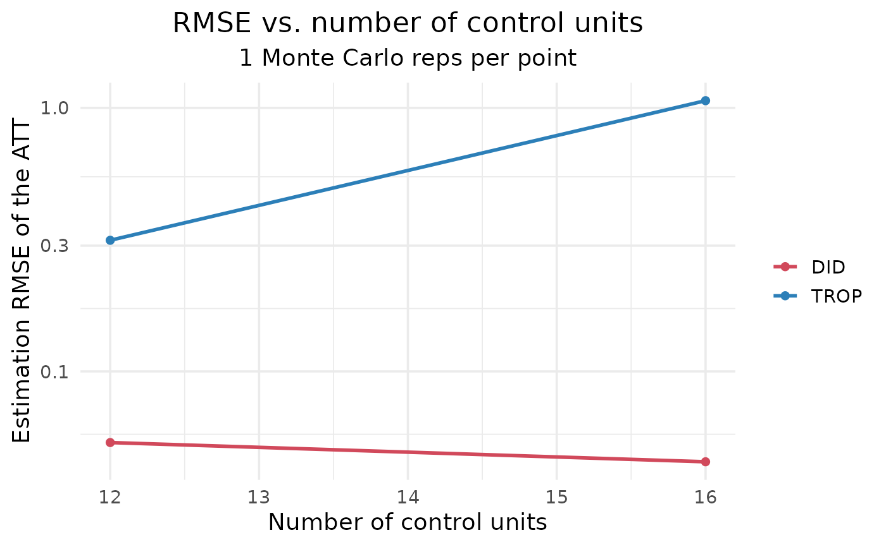
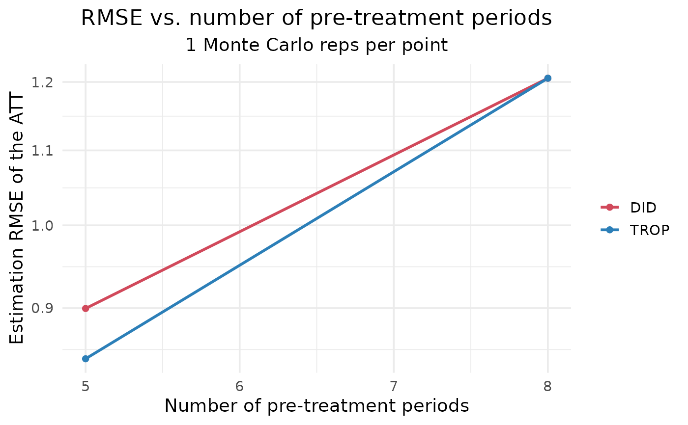

Convenience wrapper that runs rmse_curve() for both the number of control
units and the number of pre-treatment periods and bundles the two curves, so
they can be plotted individually (default) or side by side (combined = TRUE),
as in the paper's two-panel figure.
Arguments
- values_control, values_pre
Optional grids for each sweep (see
rmse_curve()defaults).- ...
Passed to
rmse_curve()(n_runs,methods, base design,att,noise,control,seed,parallel,verbose, ...). Setparallel = TRUE(plus afuture::plan) to run both sweeps in parallel.
Examples
# \donttest{
# defaults are a large simulation; use a small grid + few reps for a quick look
g <- rmse_curves(values_control = c(12, 16), values_pre = c(5, 8), n_post = 3,
n_treated = 2, n_runs = 1, methods = c("DID", "TROP"),
control = trop_control(n_cv_cells = 5L, cv_cycles = 1L,
tol = 1e-3, seed = 1L))
plot(g) # two separate figures (default)


# combined = TRUE needs the optional 'patchwork' package:
if (requireNamespace("patchwork", quietly = TRUE))
plot(g, combined = TRUE) # side-by-side, paper-style
# }